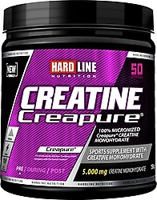
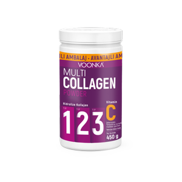

Protein Tozu
Protein tozu, vücut geliştirmecilerin kaslarını güçlendirmelerine ve onarımına yardımcı olmak için kullanılan bir supplementtir.
Protein, kasların yapısında bulunan temel yapı bloklarından biridir ve sporcuların yeterli miktarda protein almaları önemlidir.
Protein tozu, kolayca hazırlanabilir, sindirilebilir ve çeşitli tatlar sunabilir. Ancak, aşırı kullanımı karaciğer ve böbrek sorunlarına neden olabilir.
Creatine
Creatine, vücuttaki kaslarda doğal olarak bulunan bir maddedir ve kasların enerji üretiminde önemli bir rol oynar.
Creatine supplementleri, sporcuların performansını artırmak ve daha hızlı toparlanmalarına yardımcı olmak için kullanılır.
Creatine kullanımı, kas kütlesinde artışa ve daha fazla güce neden olabilir, ancak bazı kullanıcılar su tutulması, karın ağrısı ve ishal gibi yan etkiler yaşayabilirler.
Amino Asit

Amino asitler, proteinlerin yapısında bulunan yapı taşlarıdır. Supplement olarak kullanıldığında, amino asitler kasların onarımına ve büyümesine yardımcı olabilir.
Amino asitsupplementleri, özellikle egzersiz sonrası kas yorgunluğunu azaltmada etkili olabilir ve kasların daha hızlı toparlanmasını sağlayabilir.
Ancak, aşırı kullanımı böbrek sorunlarına, mide rahatsızlıklarına ve kan şekeri seviyelerinde dalgalanmalara neden olabilir.
Pre-Workout
Antrenman öncesi vücut geliştirmeciler tarafından atletik performansı artırmak için kullanılan ürünlerin genel bir terimdir.
Egzersiz sırasında dayanıklılığı, enerjiyi ve odaklanmayı artırmak için kullanılır.Pre workoutun aşırı tüketiminden kaynaklanabilen yan etkileri,
kişiden kişiye çeşitlilik gösterebilir ama örnek vermek gerekirse bunlar; çarpıntı, mide rahatsızlıkları ve psikolojik sıkıntılar şeklinde kendini gösterir.
BCAA
BCAA supplementleri, kas kütlesinin korunmasına yardımcı olmak için kullanılır.
Bu supplementler, vücuttaki BCAA (branşlı zincirli amino asitler) miktarını artırarak kas yıkımını azaltmaya yardımcı olur.
Kafein
Kafein supplementleri, antrenman öncesinde veya antrenman sırasında daha fazla enerji elde etmek için kullanılır.
Kafein, metabolizmayı hızlandırarak kalp atış hızını artırır ve daha fazla yağ yakımına yardımcı olabilir.
Omega-3
Omega-3 supplementleri, kalp sağlığı, beyin sağlığı ve iltihaplanma kontrolü gibi faydalar sağlar.
Bu supplementler, somon, uskumru, sardalya ve keten tohumu gibi kaynaklardan elde edilebilir.
Multivitamin

Multivitamin ile vücudunuzun günlük ihtiyacı olan vitaminleri, mineralleri ve ayrıca bunlara ek olarak sindirim enzimlerini kolayca karşılanabilir.
Kolajen
İnsan vücudunda en çok bulunan protein olan kolajen, vücudun temel yapı taşlarından biridir.
İsmi Yunanca'da tutkal anlamına gelen “kolla“ sözcüğünden gelir. Çünkü bir tutkal gibi dokuları bir arada tutmayı sağlar.
İşlevi bağ dokuyu güçlendirmek, cilde dayanıklılık, sıkılık ve esneklik kazandırmaktır.
L-Carnitine
Spor sırasında yağ yakımını hızlandırdığı bilinen karnitin amino asiti, kan akışını hızlandırarak kaslara daha fazla hormonun taşınmasını sağlar.
Böylece hem kas kazanımı hem de yağ yakımı bir arada sağlar.
EAA
EAA'lar vücutta kasların ihtiyacına göre kullanılabilir. Protein ihtiyacı var ise yapı taşı olarak, enerji ihtiyacı var ise enerji olarak kullanılabilir.
Bu yüzden antrenman öncesinde, sırasında ve sonrasında, çok yaygın bir şekilde kullanılır.